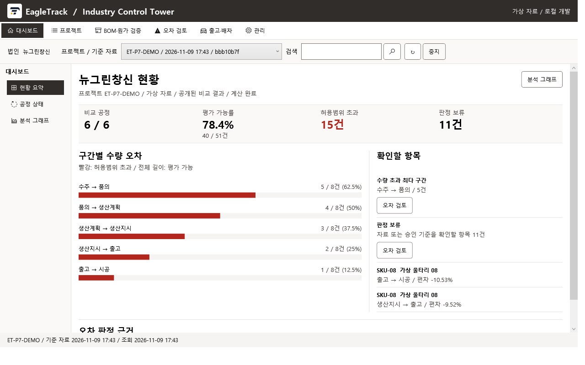
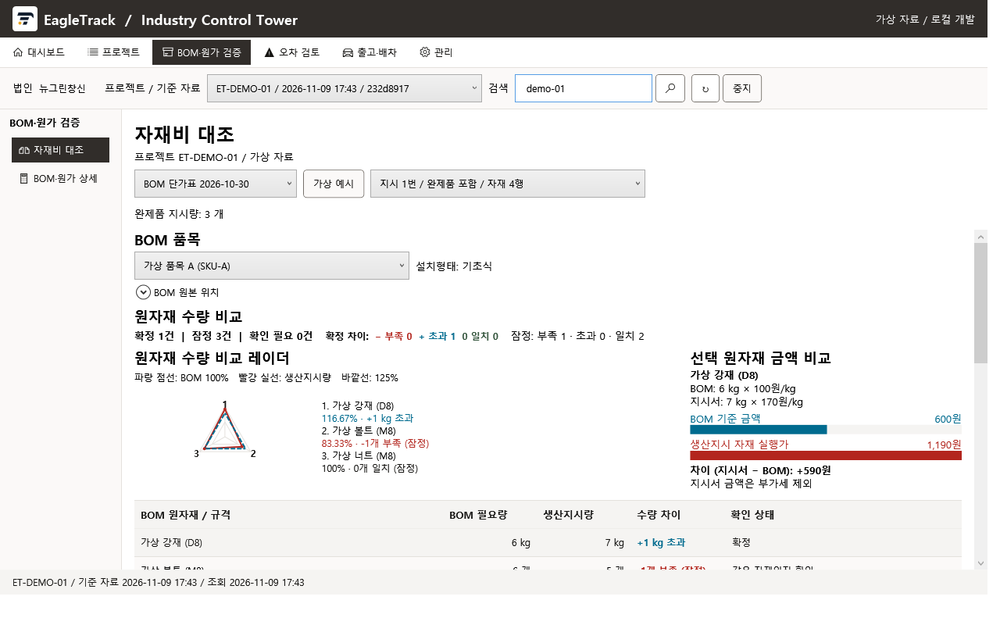
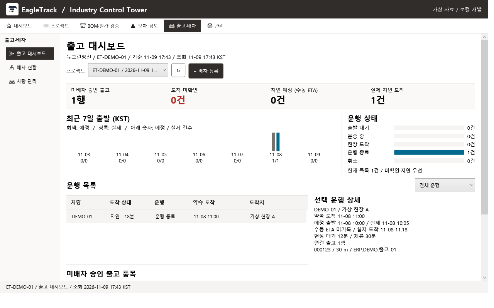
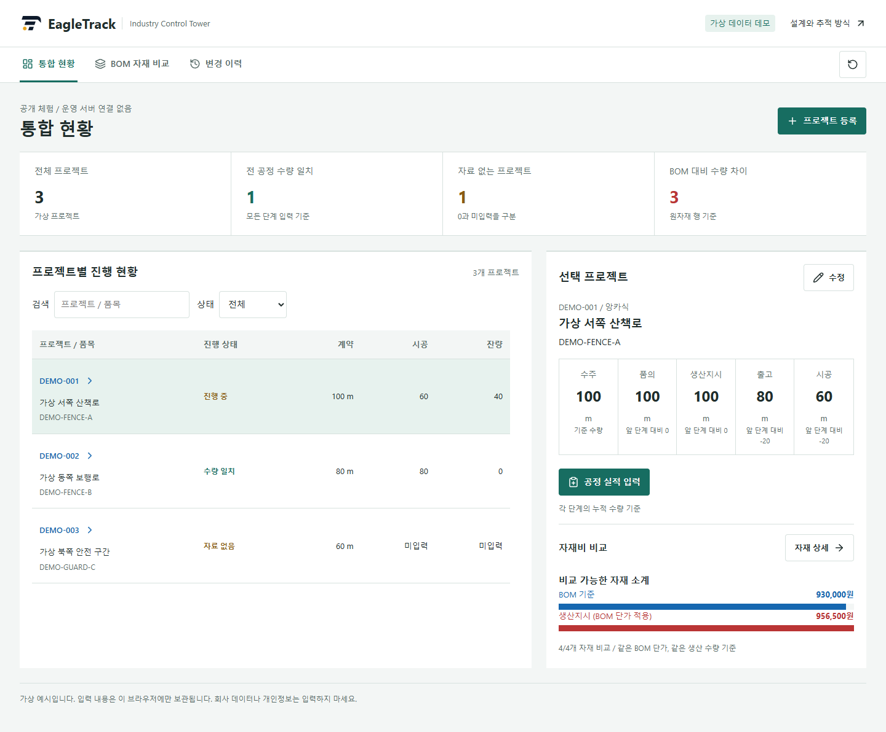
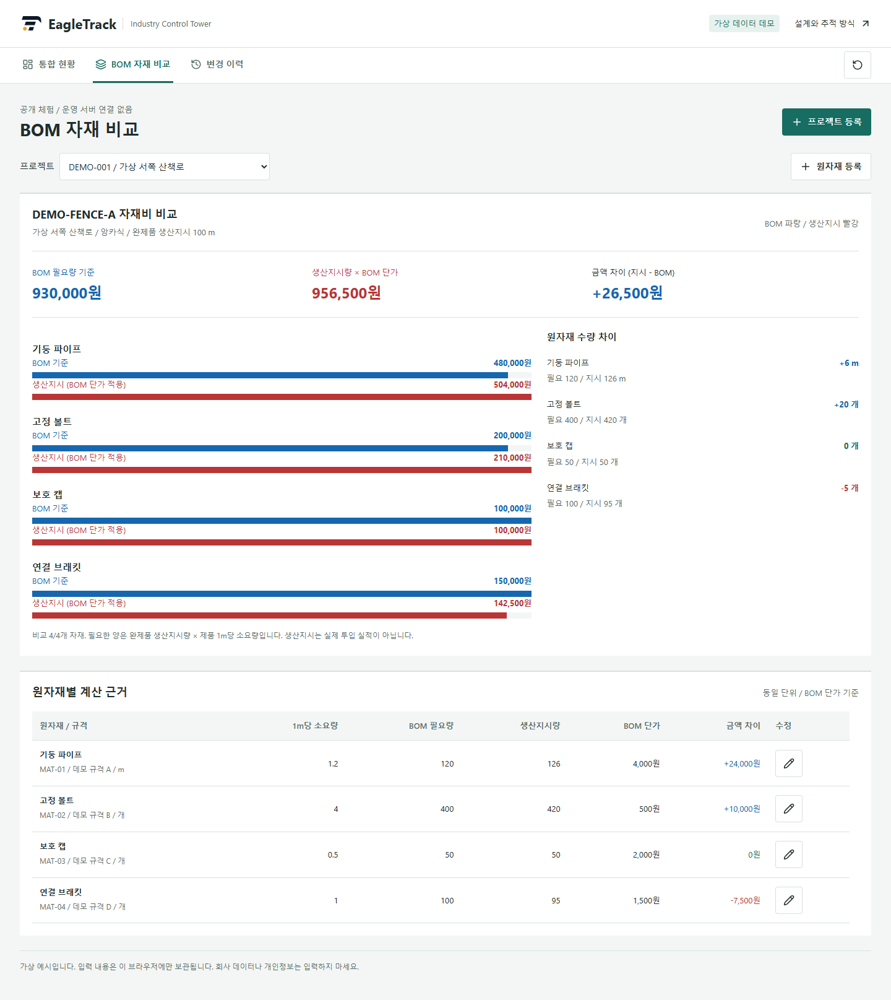

입력 자료 보존
원본 출처와 수집 시점을 남깁니다. 공개 데모에서는 화면 입력으로 대신합니다.

Industry Control Tower · C# Windows 애플리케이션
BOM부터 생산·출고·시공까지, 서로 다른 수량과 원가의 이유를 추적합니다.
C# · .NET 10 · WPF · ASP.NET Core
실제 이글트랙은 C#으로 개발한 Windows 프로그램입니다. 아래 C# 시연은 가상 데이터 검증 실행을 촬영한 화면입니다. 회사 업무 소스·DB·설정·실데이터는 공개하지 않습니다.
WPF 화면에서 공정 현황, 원자재 차이와 출고 상태를 확인합니다. 2026년 11월 9일 가상 데이터 검증 실행에서 촬영했으며, 표시된 숫자는 운영 실적이나 모델 정확도가 아닙니다.



화면보다 먼저 자료의 연결 기준을 정했습니다. 프로젝트, 완제품, 설치 형태와 규격으로 범위를 좁히고 원자재의 수량·단위·단가 기준을 분리합니다.
원본 출처와 수집 시점을 남깁니다. 공개 데모에서는 화면 입력으로 대신합니다.
프로젝트와 품목을 연결하고 기초식·앙카식, 규격, 단위를 구분합니다.
같은 대상·단위끼리 수량을 대조합니다. 자재비는 같은 BOM 단가로 비교합니다.
차이가 난 품목을 원본까지 추적하고 변경 전후 값을 기록합니다.
목표 구조: C# 업무 화면 → 조회·입력 서비스 → 연결·환산 규칙 → 계산 결과와 변경 이력. 공개 데모는 이 중 직접 입력·수량 비교·동일 단가 계산·로컬 이력을 브라우저에서 재현합니다.
법인 + 프로젝트 + 품목 + 설치 형태 + 규격을 기준으로 연결합니다. 지시 차수와 자재의 상위 완제품 관계를 보존해 다른 제품의 자재가 섞이지 않게 합니다.
앞 단계 100m, 다음 단계 80m라면 차이는 −20m입니다. 부분 출고일 수 있으므로 차이를 곧 오류로 판정하지 않습니다. 기준 시점과 누적 범위를 함께 확인합니다.
필요량 = 제품 생산지시량 × 단위 제품 소요량.
비교 금액 = 각 원자재 수량 × 동일한 BOM 단가.
금액 차이 = 생산지시 환산액 − BOM 필요액.
미입력과 숫자 0은 구분합니다. 연결·단위 근거가 없는 것은 별도로 남기며, 생산지시를 실제 투입이나 출고 실적으로 대신하지 않습니다.
| 계층 | 역할 |
|---|---|
| WPF 클라이언트 | 프로젝트 검색, 원자재 비교, 공정 차트와 작업 화면 |
| ASP.NET Core 서버 | 화면 요청을 받아 조회·입력 기능 제공 |
| Contracts / Domain | 요청·응답 형식, 공정과 비교 대상의 업무 모델 |
| Application | 자료 처리와 검토 흐름을 실행하는 서비스 |
| Infrastructure | 자료 보존, 파일 해석, 저장소 접근 |
| Tests | 가상 자료로 계산, API, 입력 실패·재시도와 화면 동작 검증 |
화면, 업무 규칙, 자료 접근을 나누어 같은 비교 기준을 여러 화면에서 사용할 수 있도록 구성했습니다. 공개 설명에는 서버 주소, DB 스키마, 인증·보안 설정을 포함하지 않습니다.
통합 프로그램의 방향입니다. 모든 영역을 완성한 ERP·MES 제품으로 소개하지 않고, 현재 대조 업무와 후속 연동 범위를 구분합니다.
| 영역 | 연결하려는 정보 | 구현 범위와 방향 |
|---|---|---|
| BOM | 제품 구성, 소요량, 원자재 단가 | 자재 수량·금액 비교 중심 |
| PDM / PLM | 품목·규격·공법, 설계 변경과 버전 | 기준 정보와 변경 이력 연계 설계 |
| PMS | 프로젝트별 공정과 진행 수량 | 프로젝트 관리 관점의 추적 |
| SCM | 공급, 출고, 운송, 현장 연결 | 공정 간 차이 분석과 연동 확장 |
| MES | 생산계획·지시와 실제 투입 실적 | 지시 자료 대조에서 실적 연동으로 확장 |
품목 식별, 공법, 규격, 단위 환산과 금액 계산은 재현 가능한 규칙으로 다룹니다. 원본을 덮어쓰지 않는 변경 구조를 지향합니다.
코드나 이름이 다른 자재의 후보 추천과 사람의 확인 결과 축적이 확장 방향입니다. 공개 데모에는 학습 모델·예측 정확도·자동 승인을 구현하지 않았습니다.
C# WPF 프로그램은 Windows에서 실행됩니다. 여기서는 회사 실행파일을 배포하지 않고, 공개용 JavaScript 체험판을 별도로 제공합니다. C# 프로그램을 브라우저로 옮긴 제품이나 운영 서버 접속 화면이 아닙니다.
가상 프로젝트 등록 → 공정 누적 수량 입력 → BOM 원자재와 생산지시량 수정 → 금액 차이와 변경 이력 확인. 엑셀 파일이나 계정은 필요하지 않습니다.


공개용 데이터는 모두 가상입니다. 입력은 현재 브라우저에만 저장되며 데모 초기화로 지워집니다. 이 기록은 보안 감사 시스템이 아닙니다. C# 회사 업무 소스와 실행파일은 이 저장소에 포함하지 않습니다.